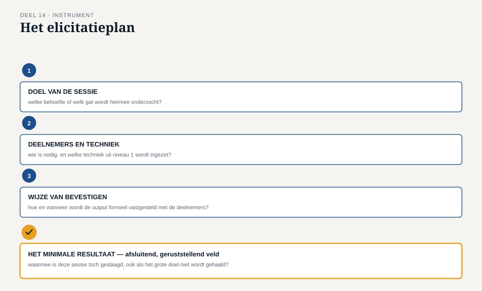

Deel 14 — Elicitatie I: voorbereiden, uitvoeren, bevestigen
Slidedeck · Ductus-cursus Business-analyse · niveau 2 · deel 14 van 30 · 22 slides
Slide 1 — Titel
Business-analyse — deel 14 Elicitatie I: voorbereiden, uitvoeren, bevestigen
Slide 2 — Terugblik
Niveau 1, deel 6: interview, documentanalyse, observatie — één analist, één behoefte.
Vandaag: elicitatie op professioneel niveau.
Slide 3 — De eerste grote sessie
“Waarom niet gewoon een paar losse interviews?”
“Omdat deze mensen elkaar nog nooit in één ruimte hebben gehoord over hetzelfde onderwerp.”
“En als het misgaat?”
“Dan wil ik vooraf weten wat we minimaal nodig hebben.”
Slide 4 — Waar we het over gaan hebben
- Voorbereiden: doel, deelnemers, materialen
- Uitvoeren: rollen die niet samenvallen
- Bevestigen: formeel, niet impliciet
- Het elicitatieplan
Slide 5 — Het doel, scherp
Niet: “de deeltijdwijziging bespreken.”
Wel: “vaststellen welke stappen Uitvoering handmatig zet, en welke een werkgever zelf zou kunnen doen.”
Slide 6 — De deelnemers
Gekozen op relatie tot het onderwerp — dezelfde logica als de belanghebbendenkaart.
Let op mengverhoudingen: senioriteit, gelijk perspectief.
Slide 7 — [Opdracht 1]
Vier interne deelnemers, twee werkgevers — pas later toegevoegd.
Wat signaleert Iris hier?
Slide 8 — Hetzelfde principe, spiegelbeeld
WGP 2.0: de interne kant ontbrak volledig.
Hier: de kant die het moet gebruiken, bijna vergeten.
Slide 9 — Materialen sturen het gesprek
Geen decoratie.
Een lege tijdlijn nodigt uit tot iets anders dan een open vraag.
Slide 10 — Drie rollen
Facilitator — bewaakt het proces Scribe — legt vast, observatie apart van interpretatie Inhoudelijke deelnemers — brengen kennis en belangen in
Slide 11 — Bij één interview: geen probleem
Eén analist, alle rollen tegelijk — werkt, want er is maar één ander perspectief.
Slide 12 — Bij meerdere belanghebbenden: wel
Wie het gesprek stuurt én zelf een standpunt heeft, stuurt — bewust of onbewust — richting dat standpunt.
Slide 13 — [Opdracht 2]
Waarom kan Merel hier niet faciliteren én inhoudelijk deelnemen? Wie zou het wel kunnen?
Slide 14 — Bevestigen
Output is pas een gevalideerde behoefte na terugkoppeling — nu op sessieniveau.
Slide 15 — Waarom dit geen formaliteit is
De luidste stem, of de aantekeningen van de scribe, kunnen het beeld domineren.
Formele bevestiging geeft iedereen een laatste correctiekans.
Slide 16 — De werkvorm van dit deel
Het elicitatieplan
Doel · Deelnemers · Techniek en rollen · Materialen · Bevestigen
Slide 17 — Het veld dat het verschil maakt
Wat is het minimale resultaat waarmee deze sessie toch geslaagd is — ook als het grote doel niet lukt?
Slide 18 — De positieve tegenhanger
Niveau 1, deel 9: het afbreekcriterium — wanneer faalt het.
Hier: wat blijft er hoe dan ook overeind.
Slide 19 —

Het elicitatieplan — met het minimale resultaat als afsluitend veld
Slide 20 — [Opdracht 3]
Vul het elicitatieplan in voor Merels sessie.
Slide 21 — [Opdracht 4]
Ontwerp bevestiging op maat — ook voor Gerard, die 's avonds werkt.
Slide 22 — Volgende keer
Dit deel: een overzichtelijke, welwillende groep.
Deel 15: de workshop met conflicterende belangen, over twee dagdelen. Het zwaartepunt van dit niveau.